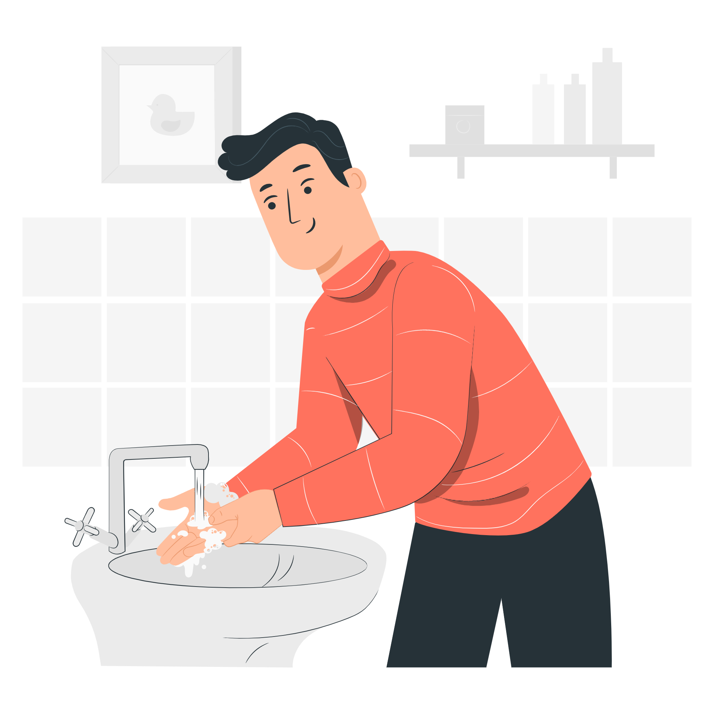
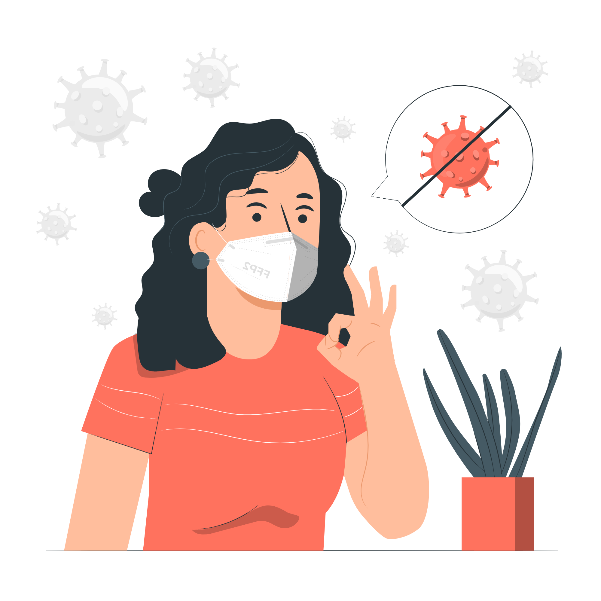
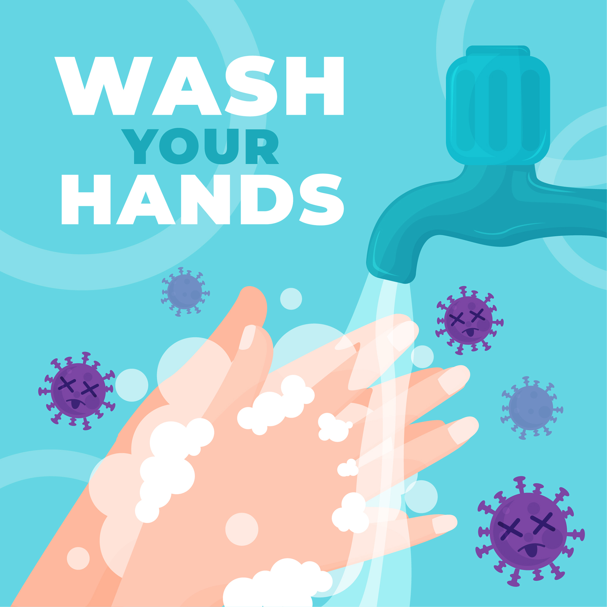
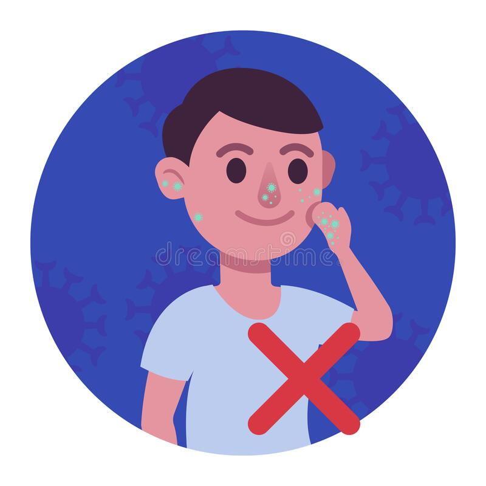
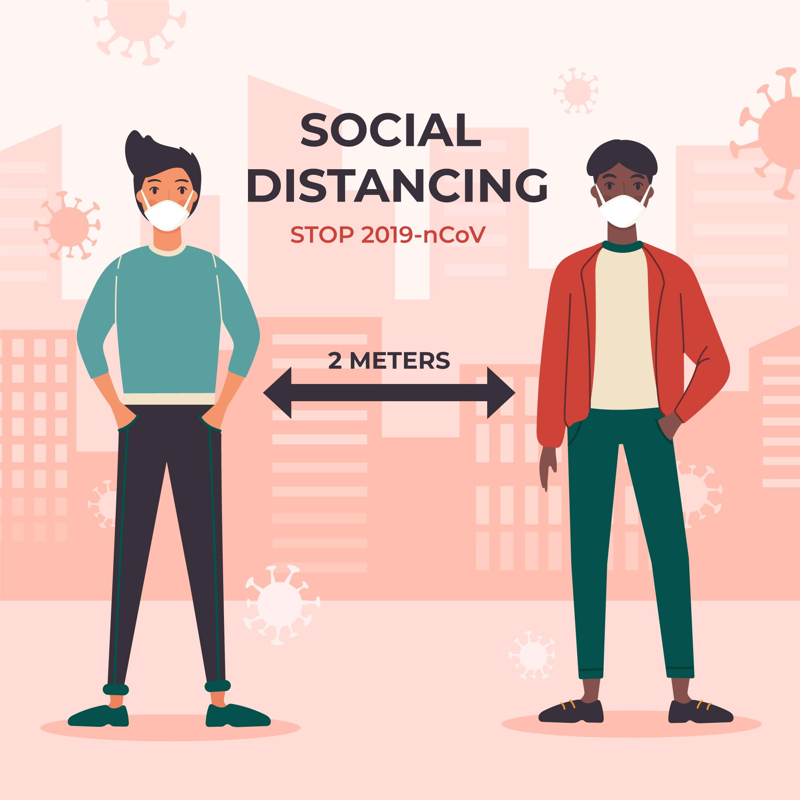
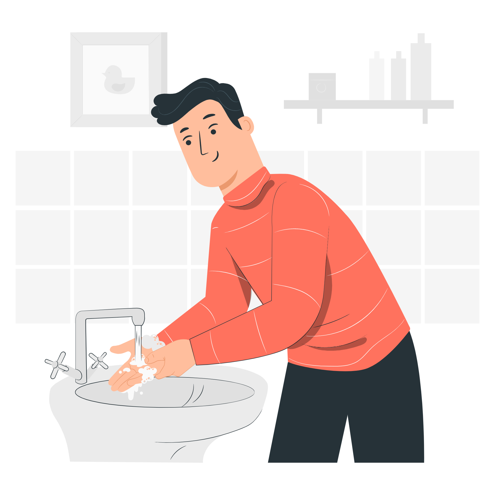
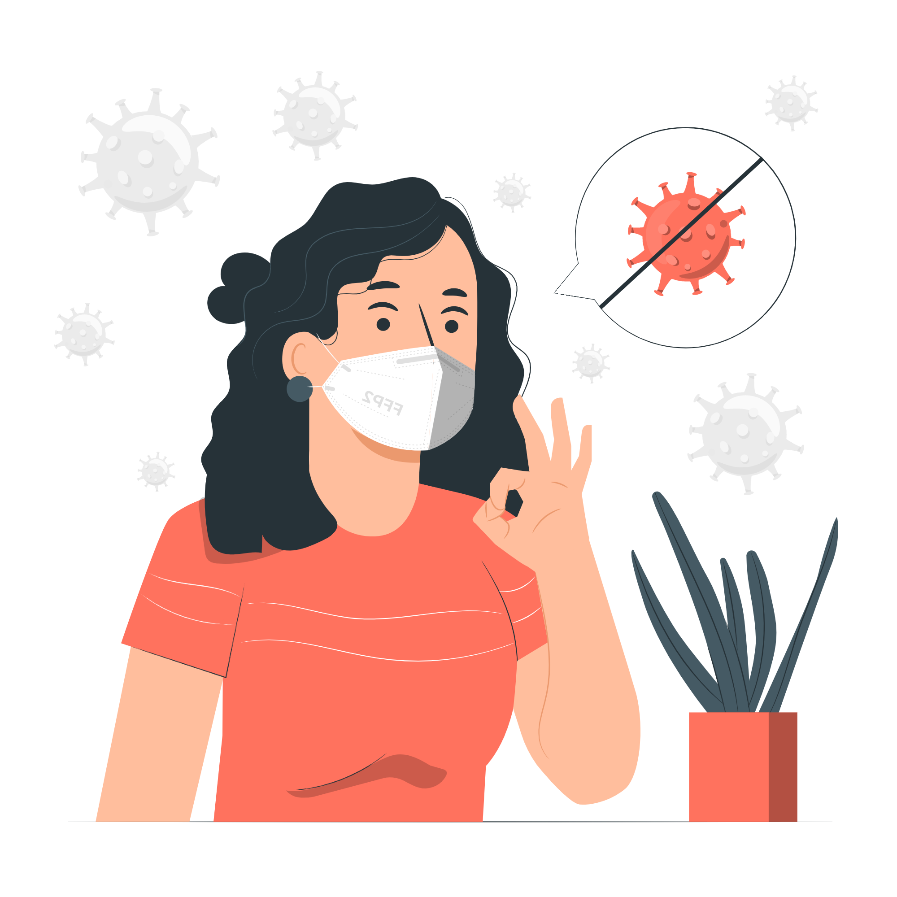
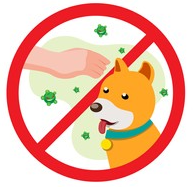
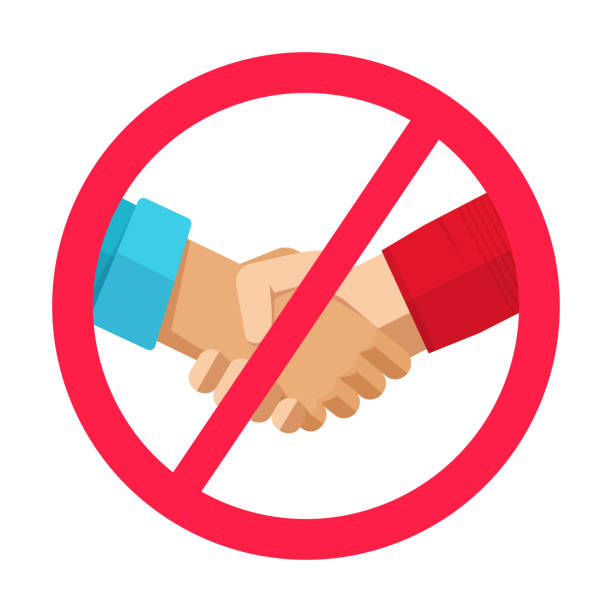
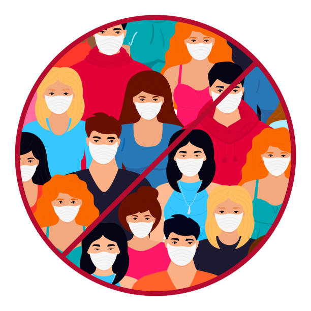

| Things you should do | |
|  | Wash your hands |
|  | Always wear a Mask |
 |
Stay home during fever |
What are Coronaviruses? |
|
HOW TO PRVENT VIRUS |
||
|  |  |  |
Wash your hands frequently! |
Don't touch your face if you haven't washed or disinfected your hands!! |
Keep the distance from people who show cold symptoms! |
Wash your hands before putting your mask on and after taking it off.
What are the main symptoms ?
Take precaution against Covid-19
| Things you should do | |
|  | Wash your hands |
|  | Always wear a Mask |
|
Stay home during fever |
| Things you should not do | |
|  | Avoid Close Contact With Animals |
|  | Avoid Close Contact With Peoples |
|  | Avoid Crowded Areas |
What to Do If You Are Sick
Steps to help prevent the spread of COVID-19 if you are sick
If you are sick with COVID-19 or think you might have COVID-19, follow the steps below to care for yourself and to help protect other people in your home and community.
Stay home except to get medical care
Stay home except to get medical care
As much as possible, stay in a specific room and away from other people and pets in your home. If possible, you should use a separate bathroom. If you need to be around other people or animals in or outside of the home, wear a mask.
Tell your close contacts that they may have been exposed to COVID-19. An infected person can spread COVID-19 starting 48 hours (or 2 days) before the person has any symptoms or tests positive. By letting your close contacts know they may have been exposed to COVID-19, you are helping to protect everyone.
Monitor your symptoms
Symptoms of COVID-19 include fever, cough, or other symptoms.
Follow care instructions from your healthcare provider and local health department. Your local health authorities may give instructions on checking your symptoms and reporting information.
When to seek emergency medical attention
Look for emergency warning signs* for COVID-19. If someone is showing any of these signs, seek emergency medical care immediately:
*This list is not all possible symptoms. Please call your medical provider for any other symptoms that are severe or concerning to you. Call 911 or call ahead to your local emergency facility: Notify the operator that you are seeking care for someone who has or may have COVID-19.
If you are sick, wear a mask over your nose and mouth
Avoid sharing personal household items